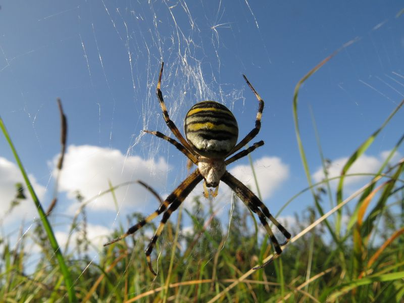

Zebraspinne
Argiope bruennichi
An sonnigen Plätzen mit niedriger Vegetation erscheint in der zweiten Sommerhälfte die Zebraspinne. Man entdeckt deren Radnetze mit dem auffälligen Zickzackband (Stabiliment) am ehesten in der Morgenfrühe, wenn irisierende Tautropfen das zarte Gespinst von der Umgebung abheben. Im Herbst fertigt das Weibchen einen Eikokon, in dem die Jungen überwintern.
Bemerkenswertes: Nach der Paarung wird das Männchen fast immer vom viel größeren Weibchen verspeist. Die früher nur in Südeuropa beheimatete Art hat sich mittlerweile in ganz Deutschland ausgebreitet. Klimaveränderung?